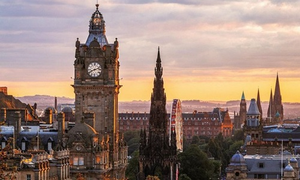

Sejarah

Edinburgh memiliki sejarah yang kaya dan beragam yang mencakup lebih dari seribu tahun.
Bukti arkeologi menunjukkan bahwa wilayah ini telah dihuni sejak Zaman Besi.
Nama "Edinburgh" berasal dari bahasa Brittonik Din Eidyn, yang berarti "Benteng Eidyn".
Benteng ini menjadi pusat penting pada abad ke-7. Pada abad ke-12, Edinburgh mulai berkembang
menjadi kota yang lebih besar dengan didirikannya Kastil Edinburgh, yang menjadi pusat kekuasaan politik dan militer di Skotlandia.
Pada abad ke-18, Edinburgh menjadi pusat utama Pencerahan Skotlandia,
dengan kontribusi besar dalam filsafat, ekonomi, dan sains.
Kota ini menjadi salah satu pusat budaya dan intelektual terpenting di Eropa.
Geografis

Edinburgh terletak di sebuah bukit vulkanik yang telah punah, memberikan lanskap yang berbukit-bukit. Kota ini dibagi menjadi dua bagian utama: Kota Tua (Old Town) dan Kota Baru (New Town).
Kota Tua memiliki jalanan yang sempit dan berliku-liku, dengan banyak bangunan bersejarah, seperti Kastil Edinburgh, Holyrood Palace, dan Royal Mile.
Sementara itu, Kota Baru, yang dibangun pada abad ke-18, dikenal dengan arsitekturnya yang teratur dan bergaya Georgia, serta jalan-jalan yang lebih lebar.
Wisata

Edinburgh merupakan salah satu kota wisata yang terkenal di Skotlandia. Kota ini memiliki banyak tempat menarik yang memiliki
nilai sejarah, budaya, dan keindahan arsitektur. Wisatawan dapat mengunjungi berbagai bangunan bersejarah menikmati suasana kota tua,
serta melihat pemandangan kota dari berbagai tempat. Dua tempat yang cukup terkenal di Edinburgh adalah Edinburgh Castle dan Royal Mile.
Edinburgh Castle

Edinburgh Castle merupakan salah satu bangunan bersejarah yang paling terkenal di Edinburgh.
Kastil ini berdiri di atas Castle Rock dan memiliki pemandangan yang luas ke arah kota.
Di dalam kawasan kastil terdapat berbagai bangunan dan peninggalan sejarah yang berkaitan dengan sejarah Skotlandia.
Karena nilai sejarah dan bentuk bangunannya yang khas, Edinburgh Castle menjadi salah satu tujuan wisata utama bagi pengunjung yang datang ke Edinburgh.
Royal Mile

Royal Mile merupakan kawasan jalan bersejarah yang berada di pusat Kota Edinburgh.
Jalan ini menghubungkan Edinburgh Castle dengan Palace of Holyroodhouse dan dikelilingi oleh berbagai bangunan tua yang memiliki arsitektur khas.
Di sepanjang Royal Mile terdapat toko, restoran, kafe, serta berbagai tempat yang menjual cendera mata.
Kawasan ini sering dikunjungi wisatawan untuk berjalan-jalan sambil menikmati suasana kota bersejarah Edinburgh.